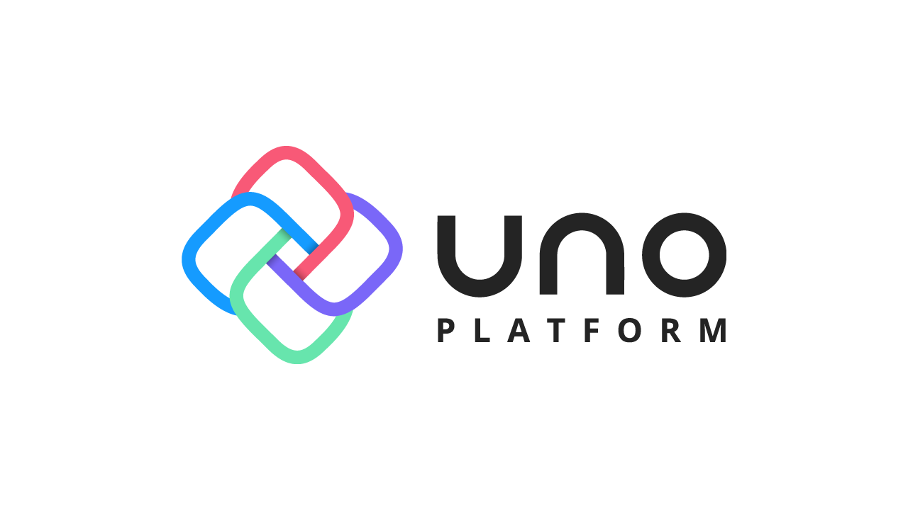

Uno Platform
This article was originally published 4th July 2020 on Linkedin
Native applications can be created for Windows using C# and XAML with the Universal Windows Platform. Native applications can be created for modern browsers such as Microsoft Edge, Google Chrome, Firebox and Apple's Safari using JavaScript with HTML 5 and CSS 5. Native applications can be created for iOS and macOS using Swift with Swift UI and for Android using Kotlin with Google Material Design.
C# Developers
C# developers can develop applications for Windows using the Universal Windows Platform, which is the modern native application platform and WinUI, which is an open-source user interface layer providing modern controls and styles for building applications. Universal Windows Platform allows developers to target a variety of Windows 10 based devices such as Desktops, Tablets, Xbox One, HoloLens and more.
Create applications for modern browsers using Blazor, which is an open sourced project to build client web applications. Blazor enables developers to build interactive web UI using C#, HTML and CSS without JavaScript and run logic server-side using ASP .NET or client-side using WebAssembly.
Make applications for iOS, macOS and Android with Xamarin, which is an open source application platform where you can build native Android, iOS, tvOS, watchOS, macOS and Windows applications using Xamarin.Forms with XAML and C#. Xamarin allows developers to create cross-platform applications with native API access and performance based on a shared native user interface.
Architecture
C# developers might want to target Windows, modern browsers, iOS, macOS and Android using a single platform and the Uno Platform aims to do just that. Uno Platform was developed by nventive based in Montreal, Canada as an open source project to enabled modern .NET developers to build applications with a single codebase using XAML and C# and can target Windows, modern browsers, iOS, macOS and Android.
Windows Calculator from Microsoft was open-sourced and was ported to the Uno Platform including the C++ calculation engine to C# and the XAML-based user interface almost entirely as-is and with a few other changes allowed the Windows Calculator to run on iOS, macOS, Android and the web at calculator.platform.uno.
Uno Platform supports Windows Desktop, where applications render using the Universal Windows Platform and WinUI which runs directly against the Windows API with fill support for Visual Studio tooling. It also supports iOS, macOS and Android, where applications render using their native UI libraries of UI Kit, App Kit and Android UI with native API bindings using Xamarin running on Mono. Uno Platform also supports modern browser where applications render using HTML and CSS and use WebAssembly.
WebAssembly is a binary instruction format for a stack-based virtual machine and designed to be encoded in a size- and load-time-efficient binary format and aims to execute at native speed and be supported on a wide range of platforms. It is designed as a portable compilation target for a variety of programming languages, including by Uno Platform with C# using Mono, and enables deployment on the web for client and server applications. It is already supported in many modern browsers such as Microsoft Edge, Google Chrome, Firefox and Apple's Safari.
Rendering
Developers needing Canvas Rendering could use Flutter, which is Google's UI toolkit for building natively compiled applications for mobile, web and desktop using a single codebase. Flutter applications are written using Dart, which is a client-optimised language where widgets are the building blocks of applications and Flutter currently supports Android and iOS but with macOS coming. Developers needing Canvas Rendering could also avalonia, which is a cross-platform XAML Framework for .NET Framework, .NET Core and Mono. Avalonia uses a XAML dialect familiar to those using Windows Presentation Foundation, Universal Windows Platform and Xamarin Forms and supports binding, MVVM, look-less controls and data templates. Avalonia used Skia for rendering in Windows using Win32, Linux with Xorg and macOS with Cocoa, there's support for Android and support for iOS.
Developers needing Native Rendering could use React Native, which combines parts of native development with the React JavaScript library for building User Interfaces. React Native applications are written in JavaScript and rendered to native platform user interface and native platform APIs. React Native has first-party support for Android and iOS plus there is third-party support for Windows and macOS. Developers needing Native Rendering could also use Xamarin, where applications are built to use standard, native user interface controls to look and behave as expected on those platforms. Xamarin applications have access to full-platform functionality and are compiled for native performance and can leverage platform-specific hardware acceleration and along with Avalonia supports look-less controls to enable Control Templating.
Uno Platform which aims to give you the best of both worlds of Canvas Rendering and Native Rendering by supporting pixel-perfect layouts, native behaviours, accessibility GPU acceleration and more. Is the only platform for building native mobile, desktop and WebAssembly applications using C# and XAML with a single codebase plus supports per control-instance level control to have the same look-and-feel or have platform-specific look-and-feel.

Native Mapping
Uno Platform uses the Universal Windows Platform and APIs map to native controls and APIs on each platform, which is implemented using platform specific APIs that don't need to know about as you just use the Universal Windows Platform and the rest are done for you. TextBlock on Universal Windows Platform becomes HTML Paragraph on WebAssembly in Modern Browsers, UILabel on iOS, NSTextView on MacOS and TextView on Android.
Libraries
Uno Platform also has direct support and forks of many popular third-party open-source .NET libraries such as ReactiveUI which is an advanced, composable, functional reactive model-view-viewmodel framework for all .NET platforms. ReactiveX for asynchronous programming with observable streams. A fork of the Windows Community Toolkit, a collection of helper functions, custom controls, and services for building Universal Windows Platform applications. SkiaSharp which is a cross-platform 2D graphics API for .NET platforms based on Google's Skia Graphics Library.
Playground
Uno Playground is a convenient way to experiment with the Uno Platform using a web-assembly compatible browser. It supports Snippets to allow you easily use various XAML-based controls, has a XAML Editor allowing any new or existing XAML to be input, Data Context to try out data binding with you XAML and the XAML Visualiser to see what the XAML will looks like on the Uno Platform at playground.platform.uno
Getting Started
Uno Platform can be developed on Windows with Visual Studio 2019 for Universal Windows Platform, Android and Web Assembly, Visual Studio for Mac and Visual Studio Code on Windows, Mac, and Linux for Web Assembly projects. To Setup Uno Platform using Windows you will need to install Visual Studio 2019 with the Universal Windows Platform development, Mobile development with .NET and ASP.NET and web development workloads installed. Then install the Uno Platform Solution Templates Visual Studio extension from the Visual Studio Marketplace in Visual Studio 2019 but will also need a mac if need to target iOS or macOS.
To Start using Uno Platform on Windows you will need to launch Visual Studio 2019, select Create a new Project from Get Started, then choose the Cross-platform App project template for the Uno Platform, set the project name and location and choose Create.
The Uno Platform Solution contains projects for each target platform including Android, iOS, macOS, Windows using Universal Windows Platform and the Web using WebAssembly with a shared project which contains any shared XAML, C# Code and assets for the application.
Future
Uno Platform already supports Windows Desktop using WinUI, Modern Browsers such as Microsoft Edge, Google Chrome, Firefox and Apple's Safari with HTML and CSS. It also supports iOS with UI Kit, macOS with App Kit and Android with Views but in the future will also support Linux using SKIA. Uno Platform is aiming to bring WinUI everywhere allowing developers to target desktop, web, mobile, dual-screen devices, gaming devices and IoT all based on .NET.
Dual-Screen devices quite literally opens a new opportunity for developers to target a brand-new class of device. Uno Platform allows you to support dual-screen devices with controls such as the TwoPaneView from WinUI and use the Hinge Angle Sensor to respond to how the two screens are folded.
Uno Platform allows you to target devices such the Surface Neo, which is tablet-style dual-screen device featuring a 360-degree full-friction hinge supporting touch, pen, and Bluetooth keyboard. Surface Neo is built for productivity using Windows 10X designed for dual-screen PCs and developers can write and test applications using existing developer tools and the Windows 10X Emulator currently in preview.
Uno Platform also allows you to target the Surface Duo, which is a mobile dual-screen device with two screens connected by a 360-degree full friction hinge. Surface Duo is built for compatibility using Android to support not only the existing Android ecosystem but a whole new generation of dual-screen applications and developers can write and test their applications using the current development tools and the Surface Duo emulator currently in preview.
Summary
Uno Platform is open source and available on GitHub at github.com/unoplatform where can submit feedback and raise any issues, learn from the Uno Bootcamp which shows how you can get started, learn more about how the Uno Platform works and find source code and examples like the Windows Calculator and Uno Playground. Some of my games have been ported to the Uno Platform on GitHub at github.com/rogueplanetoid/unoplatform including Uno Dice, Uno Bingo, Uno Lights, Uno Domino and Uno Codes.
Uno Platform allows XAML and C# developers to not only target today's devices running Windows, iOS, macOS and Android or on the Web using modern browsers such as Microsoft Edge, Google Chrome, Firefox and Apple's Safari but also allows developers to target tomorrow's devices and platforms.
Update
Since this article was originally published on LinkedIn Surface Neo and Windows 10X were cancelled however Windows 11 supports many of the features except for dual-screen Windows devices. Uno Platform also uses WinUI 3 and Windows App SDK which allows developers for that platform to bring their applications beyond just Windows.